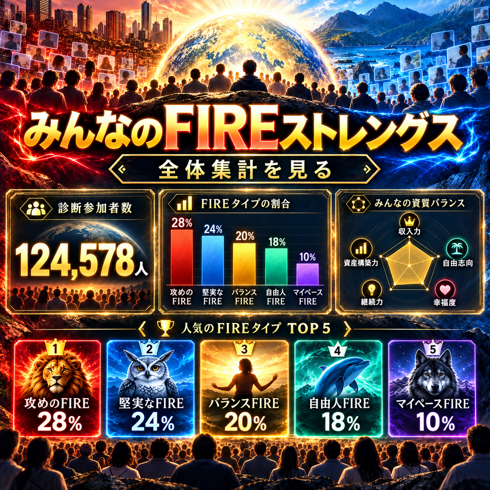

WAKUWAKU FIRE / SPECIAL DIAGNOSIS
FIREストレングス診断
究極の二択でわかる
あなたのFIRE資質
あなたは何のためにFIREする？
お金のため？ 自由のため？ 遊ぶため？ 挑戦するため？ 安心するため？
45問の究極の二択から、あなた自身もまだ気付いていない「FIRE資質」を見つけます。
この診断は「FIREに向いているか」を判定するものではありません。FIREした後、何を大切にすると満足度が高まりやすいかを見つける、ワクワクFIRE独自の価値観診断です。
STEP 01 / YOUR NAME
まず、呼ばれたい名前を教えてください。
結果画面に表示する名前・ニックネームです。
本名でなくてOK。ニックネームでどうぞ！
STEP 02 / READY?
あなたさん、準備はできましたか？
考えすぎず、「今の自分ならどちらを選ぶか」で答えてください。
- どちらでもない、はありません。必ずAかBを選びます。
- 一度選んだ回答は戻せません。最初の直感を大切にしてください。
- 回答はあなたの端末で進み、完了後に結果だけを匿名で集計します。
もし、どちらかしか選べないなら？
最初の直感を大切にして選んでください。
選択後は次の質問へ進みます。戻ることはできません。
FIRE STRENGTHS / ANALYSIS
あなたのFIRE資質を分析中…
45の選択を組み合わせて、あなたらしいFIREの形を探しています。
FIRE STRENGTHS / YOUR RESULT
あなたの診断結果
人生満喫FIRE
資産額より、人生の思い出残高。
YOUR FIRE STRENGTHS
あなたのFIRE資質 TOP5
FIRE後の満足度を高めやすい、あなたの大切な価値観です。
IN ONE SENTENCE
あなたを一言で表すと
DEEP DIVE
詳しい診断
15 TRAITS
あなたの15 FIRE資質
高い・低いではなく、今のあなたがどの価値観を優先したかを表しています。
5 DOMAINS
あなたのFIREバランス
YOUR HIGHLIGHT
あなたの突出資質
TAKE YOUR TIME
あなたが一番迷った二択
どちらもあなたにとって大切な価値観だったようです。
FIRST INSTINCT
あなたが即答した価値観
最初の直感に、今のあなたらしさが表れています。
WAKUWAKU COMMUNITY
みんなと比べると？
個人名や回答内容は公開せず、完了した診断の集計だけを表示します。
みんなの結果を集計中…
12 TYPES
FIREタイプランキング
A LITTLE PERSPECTIVE
あなたのタイプはどれくらいレア？
YOUR FIRE LIFE
あなたに向いていそうなFIRE生活
タイプから見えてくる、相性のよい暮らしのアイデアです。
FIRE ALERT
あなたのFIRE注意報
ANOTHER VALUE
あなたが今あまり優先しなかった価値観
これは弱点や欠点ではありません。診断時点や人生の状況によって、価値観の表れ方は変化します。
この診断は、FIREに関する価値観を楽しみながら可視化するワクワクFIRE独自の診断です。医学・心理学上の診断や、将来の幸福を保証するものではありません。結果は現在の状況や価値観によって変化する場合があります。
FIREストレングス診断とは
FIREストレングス診断は、45問の二択からFIRE後に大切にしたい価値観を15資質・5領域で可視化し、12種類のFIREタイプとして紹介する、ワクワクFIRE独自の診断コンテンツです。正解・不正解はありません。今の自分ならどちらを選ぶか、直感で答えてみてください。
診断結果について
結果はFIRE後の暮らしを考えるためのヒントです。「FIREに向いている／向いていない」を判定するものではなく、人生の満足度を高めやすい価値観を楽しく振り返るためのものです。

COMMUNITY DATAみんなの結果を見る診断結果を匿名で集計した、FIREタイプと資質の全体ランキングをチェックできます。全体集計を見る ほかの楽しいコンテンツへ →